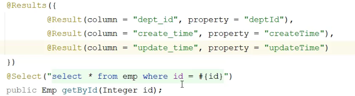
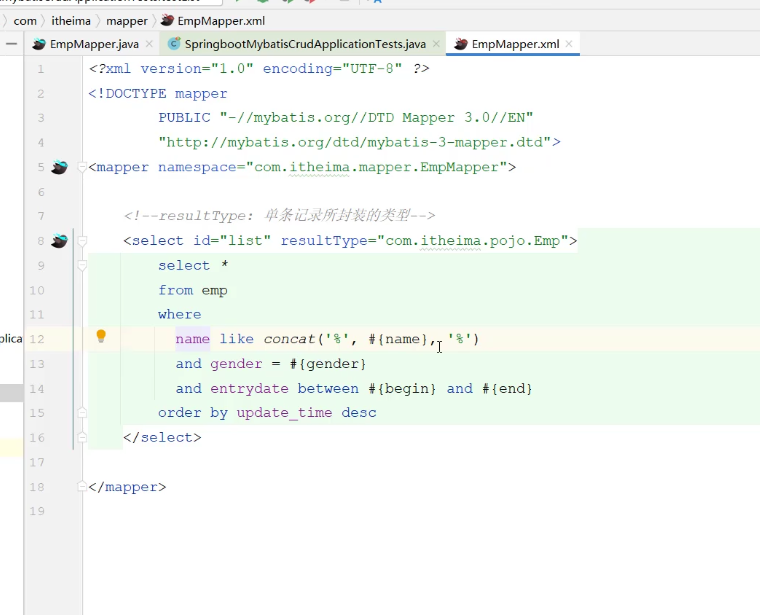
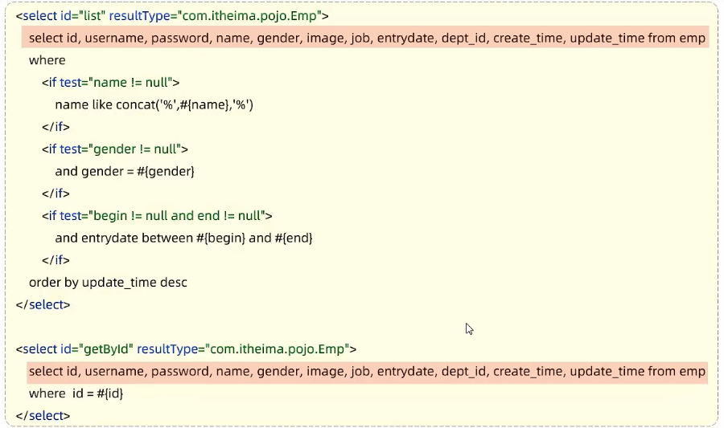

MyBatis
增删查改 CRUD
删除
从 emp 表中删除员工信息。
- 写 SQL 语句：删除主键 id = 17 的员工：
delete from emp where id = 17;
- 写 Mapper 接口：
@Mapper
public interface EmpMapper{
@Delete("delete from emp where id = 17") //删除注解，里面写 SQL 语句
public void delete();
}
- 17 应该是用户传来的参数，把 17 替换掉：
@Mapper
public interface EmpMapper{
@Delete("delete from emp where id = #{id}") //删除注解，里面写 SQL 语句
public void delete(Integer id);
}
- 测试这个接口，实际上这个 id 是前端传来的数据：
@SpringBootTest
class SpringBootMybatisCrudApplicationTests{
@Autowired
private EmpMapper empMappper;
public void testDelete(){
empMapper.delete(id);
}
}
- 想要拿到返回值，知道到底操作了多少数据：
@Mapper
public interface EmpMapper{
@Delete("delete from emp where id = #{id}") //删除注解，里面写 SQL 语句
public int delete(Integer id);
}
@SpringBootTest
class SpringBootMybatisCrudApplicationTests{
@Autowired
private EmpMapper empMappper;
public void testDelete(){
int delete = empMapper.delete(id);
System.out.println(delete);
}
}
- 返回值为 0，就是没有删除数据；
- 返回值为 1，操作了 1 条数据；
:::info 注意：如果 mapper 接口方法形参只有一个普通类型的参数，#{...} 里面的属性名字可以随便写，如：
{id}、#{value}。
:::
- 控制台输出日志信息
#配置Mybatis日志信息
mybatis.configuration.log-impl=org.apache.ibatis.logging.stdout.StdOutImpl
--> Preparing:delete from emp where id = ?
==> Paramteters:16(Integer)
<== Updates:0
? 问号：参数占位符。会使用下面的参数，占用这个位置。
Updates = 0 意思是 0 行进行修改。
前两行被叫做“预编译 SQL”，好处是性能高，更安全。
性能高：是因为简化了 SQL 编译后的流程，放在缓存中，后面再查就快了。
更安全：可以防止 SQL 注入。
新增
- 写插入 SQL 语句：
insert into emp(username, name, gender,image,birth,create_time)
values(‘Tom’,'汤姆','男','1.jpg','2000-1-1',now());
- 写 Mapper：
@Insert("insert into emp(username, name, gender,image,birth,create_time")
values(‘Tom’,'汤姆','男','1.jpg','2000-1-1',now()))
public void insert();
- 声明方法形参，封装成员工对象：
@Insert("insert into emp(username, name, gender,image,birth,create_time")
values(#{username},#{name},#{gender},#{image},#{birth},#{createTime}"))
public void insert(Emp emp);
- 有些情况需要主键返回，在数据添加成功后，需要获取插入数据库数据的主键，供后续操作使用：
@Options(keyProperty="id",useGeneratedKeys=true)
@Insert("insert into emp(username, name, gender,image,birth,create_time")
values(#{username},#{name},#{gender},#{image},#{birth},#{createTime}"))
public void insert(Emp emp);
@Options(keyProperty="id",useGeneratedKeys=true) 这个注解会自动生成的主键值，赋值给 emp 对象的 id 属性。可以用于页面的回显展示。
更新
- 写 SQL 语句
update emp set username = '',name = '',gender = '', image = '',birth ='',update_time ='' where id = 1;
- 在 mapper 中更新数据
@update("update emp set username = '',name = '',gender = '', image = '',birth ='',update_time ='' where id = 1'"
)
public void update();
- 封装对象
@update("update emp set username = #{username},name = #{name},gender = #{gender}, image = #{image},brith =#{birth},update_time =#{updateTime} where id = #{id}
")
public void update(Emp emp);
查询
基本查询
根据 id 查询员工
@Select("select * emp where id = #{id}")
public Emp getById(Integer id);
有时候查询返回回来的一些字段为空，这是因为 mybatis 的自动封装机制：
- 实体类属性名和数据库表查询返回的字段名一致，mybatis 会自动封装。
- 如果实体类属性名和数据库表查询返回的字段名不一致，不能自动封装。

解决方案 1 : 给字段起别名，让别名与实体类属性一致

解决方案 2: 使用注解 @Results @Value

解决方案 3: 开启驼峰命名自动映射开关

条件查询
- SQL 语句，根据员工的条件查询：
姓张（模糊查询），性别男，更新时间倒序列出。
select * from emp where name like '%张%' and gender = 1 order by update_time desc;

分页查询
XML 映射文件
:::info ✏️ 一些规范：
- XML 映射文件的名称和 Mapper 接口名称一致，并且 XML 映射文件和 Mapper 接口放置在相同包下（同包同名）；
- XML 映射文件的 namespace 属性为 Mapper 接口全限定名一致；
- XML 映射文件中 SQL 语句的 id 与 Mapper 接口中的方法名一致，并保持返回类型一致。
:::
动态 SQL
随着用户的输入或者外部条件的变化而变化的 SQL 语句，我们称之为动态 SQL。
动态条件查询

<select id="list" resultType="com.pojo.Emp">
select *
from emp
where
<if test="name != null">
name like concat('%',#{name},'%')
</if>
and gender = #{gender}
and entrydate between #{begin} and #{end}
order by update_time desc
</select>
如果 name != null 就模糊查询...
如果想要每一个条件都可以匹配，使用
这个标签会自动判断子标签里面的条件是否成立，成立则会生成这个if 里面的语句，还会自动删除多余的 and 字符。

常见场景：
- 动态更新员工信息：
- 如果有更新时传递有值，则更新；
- 如果更新时候没有值传递，则不更新。

如果我只想更新部分字段，使用

:::info
总结：
**
- 用于判断条件是否成立，如果条件为 true，则拼接 SQL。
- 形式：
... 。
- where 元素只会存在子元素有内容的情况下才会插入 where 子句，而且会自动去除子句的开头的 AND 或 OR。
- 动态地在行首插入 SET 关键字，并会删掉额外的逗号。（用在 update 语句中。）
:::
SQL 语句是：
delete from emp where id in(18,19,20)
批量删除 id 为 18 19 20 的疏忽。
<!--批量删除员工-->
<delete id="deleteByIds">
delete from emp where id in(18,19,20)
</delete>
<!--批量删除员工-->
<delete id="deleteByIds">
delete from emp where id in
<foreach collection="ids" item="id" separator="," open="(" close=")">
#{id}
</foreach>
</delete>
这里的一些字段含义：
collection：遍历的集合
item：遍历出来的元素
separator：分隔符
open：遍历开始前拼接的 SQL 片段
close：遍历结束拼接的 SQL 片段
拼接出来的就是 (18,19,20)
在下面的代码中，代码的复用性较差，当修改一个表的字段的时候，另外一查询代码也需要进行修改。

<sql id = "commonSelect">
select id,usename,password,name,gender,image,job,entrydate,dept_id,create_time,update_time
from emp
</sql>

更新: 2023-10-29 16:16:13
原文: https://www.yuque.com/xiaoshan_wgo/codingnotes/ln7glqdhilsvsczl